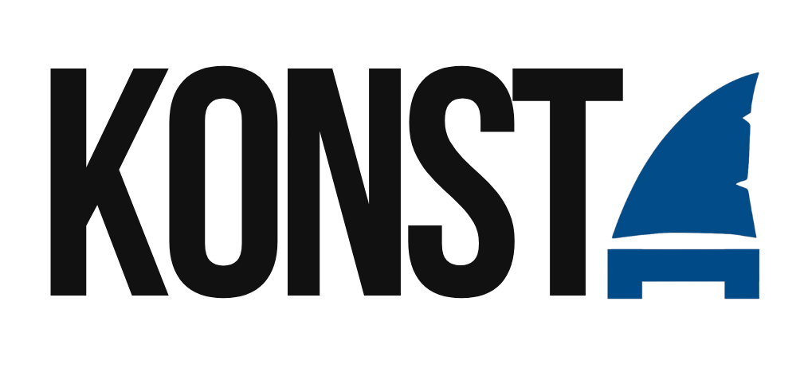

Más allá de la velocidad. Más allá de la medalla. Un proyecto de vida construido con disciplina implacable y el respaldo de un equipo que rompe límites.
MUCHOS VEN EL SALTO. POCOS VEN LAS HORAS DE MADRUGONES, EL FRÍO, LA TÉCNICA Y LA CONVICCIÓN. ESTO NO ES SUERTE.
ESTO ES
MODO TIBURÓN.
Detrás de cada marca en el cronómetro, de cada salto y de cada medalla, hay una historia que no se ve en las piscinas. El camino de Konsta no ha sido una línea recta; se ha construido adaptándose a nuevos entornos, viviendo el deporte con una mentalidad global y entendiendo que el éxito real es el resultado de un esfuerzo compartido.
En este proyecto no compite una sola persona. El verdadero núcleo de esta historia es un equipo incondicional: una familia que ha sabido estructurar los sueños de su hijo con disciplina, honestidad y un propósito humano inquebrantable.
Para las marcas y aliados estratégicos que buscan asociarse con valores reales, el Proyecto Konsta representa transparencia, confianza institucional y un compromiso genuino con la excelencia. Aquí no solo apoyas a un deportista; respaldas un proyecto de vida íntegro que transforma el talento en un legado.
El talento en Colombia es inmenso, pero el deporte de élite es una carrera de resistencia financiera tanto como física. Al crecer en esta modalidad, he entendido que la excelencia no puede ser un camino solitario.
Mi propósito no es solo llegar al podio; es abrir la puerta para que otros también lo hagan. Estamos creando un movimiento para apoyar a compañeros con alto potencial, porque la monoaleta es un deporte donde el éxito de uno eleva el nivel de todos.
Las grandes marcas tienen el poder de transformar el deporte. Buscamos aliados visionarios que elijan apostar por el talento, respaldar el esfuerzo y convertirse en parte activa del desarrollo de la próxima generación de campeones mundiales colombianos.
NO ES SOLO PATROCINIO;
ES CONSTRUIR LEGADOS JUNTOS.
“HE VISTO A GRANDES TALENTOS DEJAR EL AGUA PORQUE LOS COSTOS DE LOS EQUIPOS LOS SUPERARON. ESO NO ES FALTA DE CAPACIDAD, ES FALTA DE OPORTUNIDADES. MI VISIÓN ES DEMOSTRAR QUE EL ALTO RENDIMIENTO ES POSIBLE CUANDO UNIMOS FUERZAS. COMO EQUIPO, SOMOS IMBATIBLES.”— Konsta
En el alto rendimiento, ningún campeón llega solo a la cima. Creemos firmemente que el verdadero liderazgo se mide por cuántos talentos logramos elevar junto a nosotros.
La Colección Legado no es solo una serie de piezas exclusivas de edición limitada; es un puente financiero hacia el sueño de atletas con un potencial inmenso y recursos limitados. Cada artículo de esta serie de autor está diseñado con los estándares estéticos y técnicos del “Modo Tiburón”.
Los fondos recaudados a través de estas ediciones limitadas se destinan directamente a financiar inscripciones, traslados e implementos de competencia para compañeros de la disciplina que necesitan un impulso en su carrera deportiva.
Piezas numeradas y de tiraje exclusivo, creadas para coleccionistas, simpatizantes y marcas que entienden que el deporte es una herramienta de transformación social.
Adquiere una pieza de esta colección exclusiva y sé parte activa del movimiento que está reescribiendo el futuro de la monoaleta en el país.
Ver colección exclusiva y apoyarEl gran objetivo está marcado en el calendario: The World Games 2029, del 19 al 29 de julio de 2029 en Karlsruhe, Alemania. Pero mi visión va mucho más allá de competir; lo que más anhelo es llevar la tricolor a lo más alto, regalarle una alegría inmensa a mi Colombia y demostrarle al planeta entero el nivel y el talento extraordinario que hay en nuestro país.
Para llegar con absoluta solidez a este escenario mundial, cada jornada se enfoca en superar mis propios límites, perfeccionar la técnica y ejecutar una estrategia milimétrica que parte desde la defensa del Ranking #1 departamental hasta la consolidación internacional. No espero que los resultados lleguen por casualidad; los construyo sesión tras sesión, elevando el estándar y rompiendo marcas.
El alto rendimiento es un compromiso absoluto con el legado. Estamos construyendo una cultura, una disciplina y un ejemplo imborrable de integridad deportiva a través del trabajo duro y la superación constante, listos para representar con orgullo a Colombia ante el mundo.
Al asociarte con este proyecto, tu marca no aparece únicamente en un uniforme de alta competición; entra a formar parte de un ecosistema donde el liderazgo, la gestión y el impacto social se unen. Konsta es el embajador de una disciplina en pleno crecimiento, un gestor que moviliza, inspira y lidera a la próxima generación de campeones mundiales colombianos.
¿TIENES LA VISIÓN CORPORATIVA PARA CONSTRUIR UN LEGADO QUE TRASCIENDA EL PODIO?
Descargar brochure técnico de patrocinio Dossier corporativo y ROI para marcas Contactar al equipo de gestión Canal directo gestionado por CONEX1ON PSH